What is Transmogrification?
Transmorgification is a way of changing your current armor pieces and weapons to look like
items you've previously encountered within the video game World of Warcraft. You "learn" the apperances
of items you find and it getts added to the wardrobe function.
This system was introduced in Patch 4.3 back in November 29th, 2011.
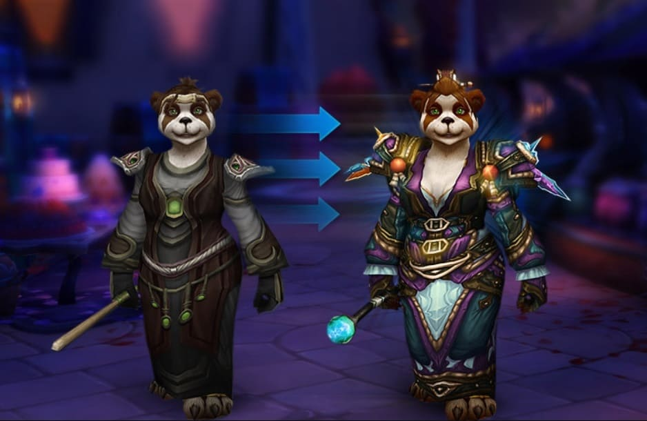
This means that the outfit we wear does not have to look like the items we currently have equipped, similar
to how Skins work in other games. It gives us the freedom to express ourselves and to not
be limited by the equipped armor and weapons. It gives space for us to be creative, many chose to make references
to characters from other games and movies.
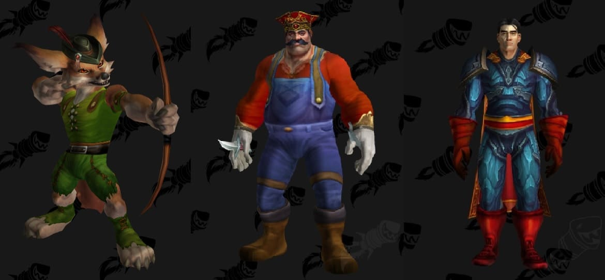
Once you have learnt an apperance you can find it in your wardrobe (press Shift + P to open ingame), here
you can browse through everything you own but also uncollected apperances.
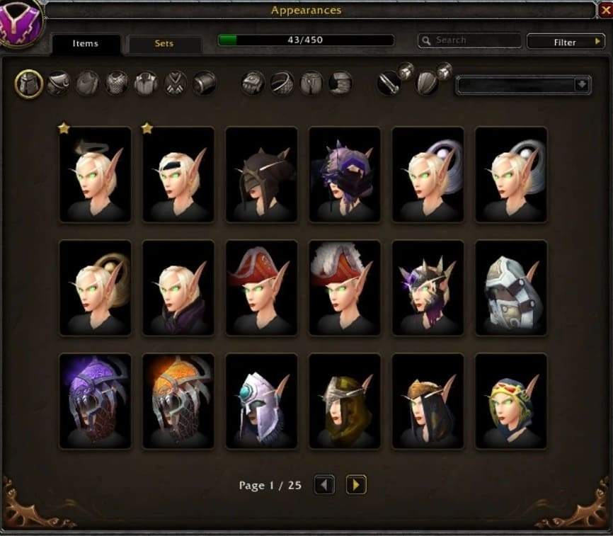
How to & Locations
To Transmogrify you have to visit a Transmogifier. They are located in all capitital cities and you
can track them with the icon on the map.

Another option is to buy the Transmog Mount (Grand Expedition Yak) which comes with an NPC that allows you to transmogrify
at your own comfort. This will set you back 120.000 Gold, the vendor is called 'Uncle Bigpocket" and can be
located in Kun-Lai Summit in Pandaria.
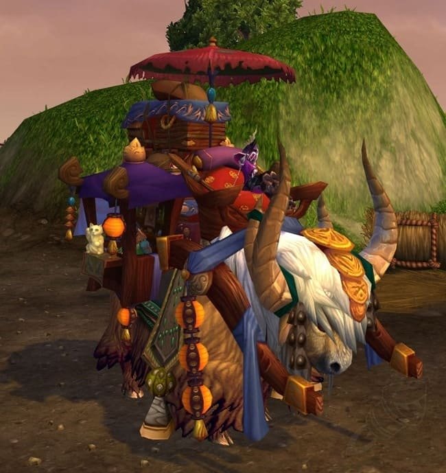
It costs to Transmogrify so choose your outfits carefully! You can save your different sets in the top of
the outfit tab.
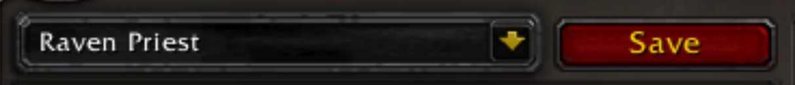
Classes, Armor and & Weapons
There are 12 playable character classes in World of Warcraft and there are 4 armor types. Different classes can use
different types of armor.
Cloth is the lightest armor and can be used by Mages, Priests and Warlocks.
Leather is the second lightest armor and can be used by Demon Hunters, Druids, Monks and Rogues.
Mail is the second heaviest armor and can be used by Hunters and Shamans.
Plate is the heaviest armor and can be used by Death Knights, Paladins and Warriors.
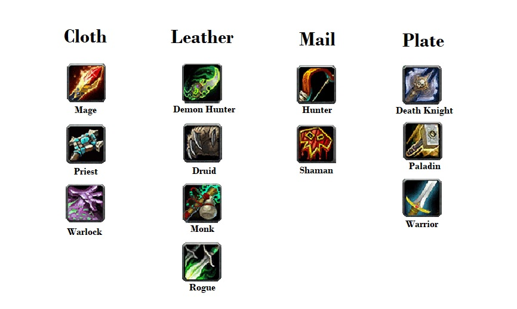
Just like there is different types of armor, there are different types of weapons and off-hands (such as shields).
Death Knights can use Axes, Maces, Polearms and Swords.
Demon Hunters can use Axes, Fist Weapons, Swords and Warglaives.
Druids can use Daggers, Fist Weapons, Maces, Polearms and Staves.
Hunters can use Axes, Bows, Crossbows, Daggers, Fist Weapons, Guns, Polearms, Staves and Swords.
Mages can use Daggers, Staves, Swords and Wands.
Monks can use Axes, Fist Weapons, Maces, Polearms, Staves and Swords.
Paladins can use Axes, Maces, Polearms and Swords.
Priests can use Daggers, Maces, Staves and Wands.
Rogues can use Axes, Bows, Crossbows, Daggers, Fist Weapons, Guns, Maces and Swords.
Shamans can use Axes, Daggers, Fist Weapons, Maces and Staves.
Warlocks can use Daggers, Staves, Swords and Wands.
Warriors can use Axes, Bows, Crossbows, Daggers, Fist Weapons, Guns, Maces, Polearms, Staves and Swords.
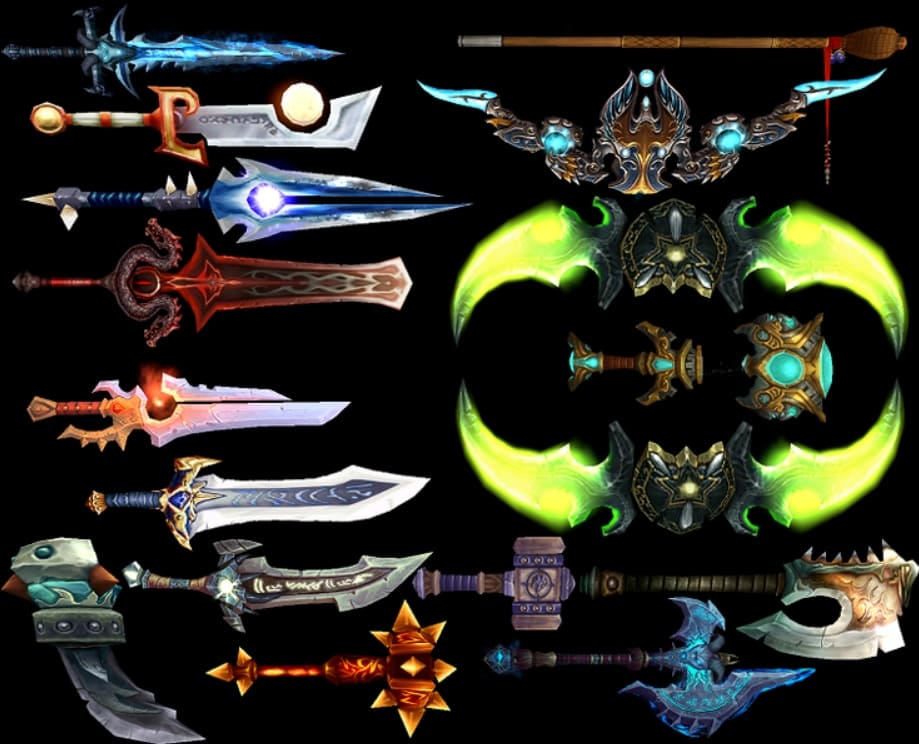
Add-ons
Add-ons are extra functions you can download to edit your interface within World of Warcraft. It can be
anything from how your inventory looks to functions that calculates your damage done. There are some Transmogrifying Add-ons
that I feel are worth mentioning.
I can highly suggest getting an addon called "Narcissus". This Add-on allows you to remove armor and edit sets even if you
do not have a Transmogifier available, it also allows you to take some snazzy photos of your sets!
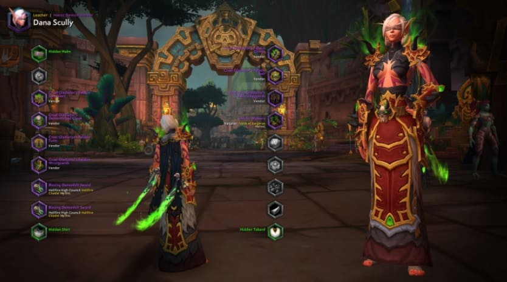
Another popular choice is Mogit which allows you to share different sets. This Add-on is a bit outdated but
was very popular before Narcissus was released, it is still used to this day.
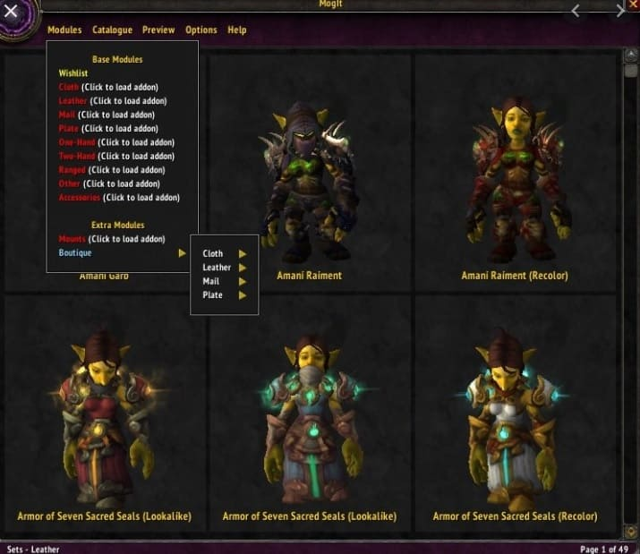
Personally I would go with Narcissus as it has many functions and gets updated often. This Add-on is vital to
my transmog experience and I would not trade it for any other Add-on. All Add-ons can be downloaded via the Curse Add-on
forge in the Application Overwolf.
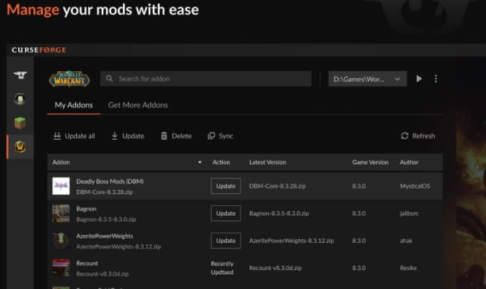
Suggested content
If you want to know more about Transmogs I will suggest a few other Webpages below! These are websites I use
myself to browse and collect inspiration My favorite one is WoWhead, they have a LOT of information and a massive
database filled with Transmogs.
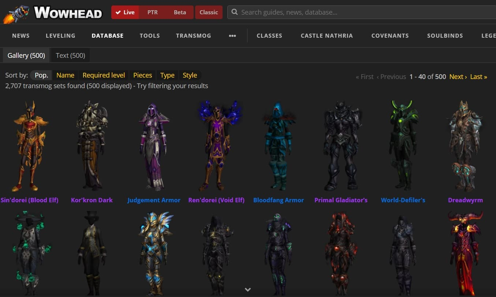
Another place you can use to see models of armor is Icy Veins, I seldom use it but its still very useful.
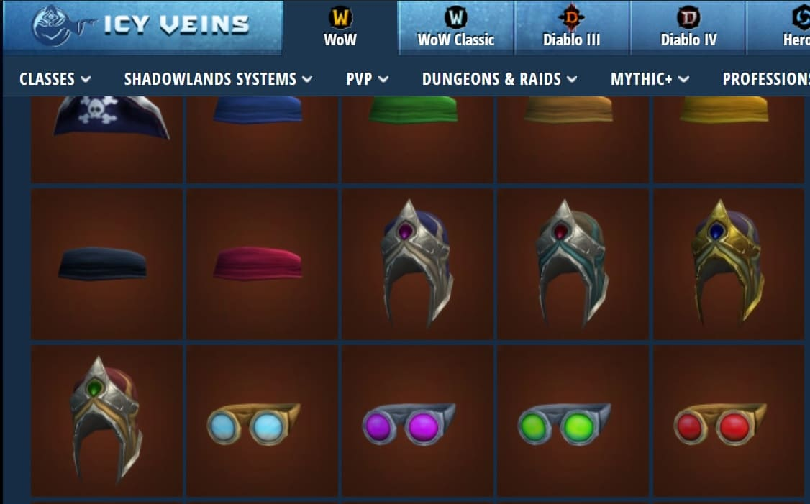
I mainly use forums as inspirations and find groups on both Facebook and Reddit. Here I find that I can talk
to others with the same interest and get a lot of friends among the way!